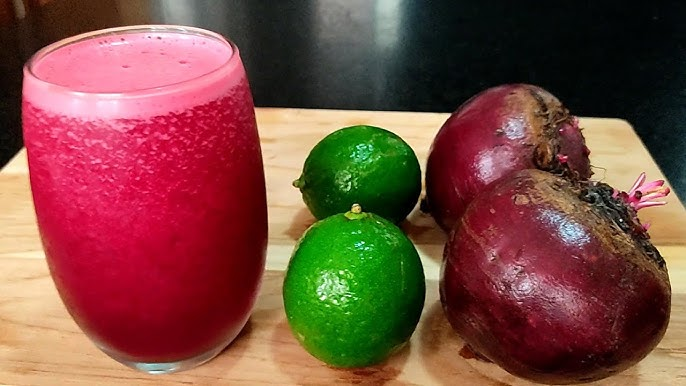

SUCO DE BETERRABA COM LIMÃO
Ingredientes
1 beterraba descascada e cortada em pedaços
Ramos de folhas de beterraba à gosto
1 limão sem sementes, fibras brancas e sementes (somente o gomo)
Melado de cana e/ou açúcar mascavo a gosto
1 e 1/2 copo de água
Modo de preparo
h3Bata todos os ingredientes no liquidificador até formar o suco. Adicione gelo, melado e/ou açúcar mascavo a gosto e beba sem coar.
